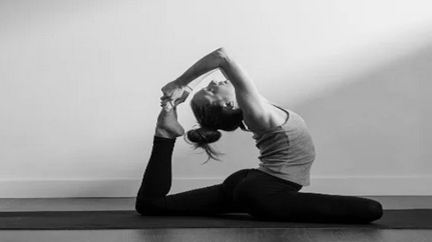

Amadureça seu lado
espiritual .
A prática de yoga conecta seu lado sensível com seu lado espiritual, além de ser benéfico para saúde e garantir o bem estar. Nossos instrutores onlines são comprometidos em ser seus anjos de luz nessa jornada de descobrimento.

Posição do cisne
tendo um AVC.
Essa posição é conhecida por abrir os chakras frontais e médios para que você tenha mais percepção da realidade a sua volta. É uma posição de nível avançado para nossos yoogers mais experientes e flexíveis.